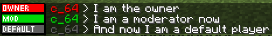
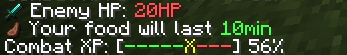

So I was browsing YouTube and a video got recommended to me. It was about messing with Minecraft fonts in resource packs
The idea is that Minecraft has a lot of unused Unicode charachters in thier vanilla font, and we can make use of them because since 1.13 you can create our own fonts.
And here I was messing with it and I decided to share some of the results with you.
My first idea was to make rank tags using that idea, and I think it turned out alright.

This can be extended far beyond these examples, you can add icons and of course more ranks.
I also had the idea to create chat HUDs.

In this example, it shows the Enemny HP, a guess on how long your food will last, and how close you are to getting to a new Combat level.
Of course Minecraft chat messages dissapear after some time, so you need to resend the message every 9 seconds.
So now for the last part I'll tell you how you can do it yourself.
You can either watch the tutorial video or follow my guide.
- Create a basic Minecraft Resource pack. You need the assets folder, which contains a minecrfat folder, which should contain a font and a textures folder.
-
Now in the font foler, create a file called default.json.
The type property is just to show that its a image, ttf is also a valid option, altough I don't know how to use it.JSONdefault.json{
"providers": [
{
"type": "bitmap",
"file": "minecraft:font/example.png",
"ascent": 8,
"height": 9,
"chars": [
"\uEff1"
]
}
]
}
The file property is just the location to your image, in this case it would be located at /assets/minecraft/textures/example.png
The ascent property is how much you want to move it on the Y-axis.
The hight property just shows how high your font is.
And the chars array shows which characters should be shown for that font. - And now lastly, put your image into /assets/minecraft/textures/example.png. Try to make the image height the same as the height in default.json.